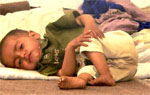

|
Brezel-Böhmer Kuppenheim spendet 750 € für Erdbebenopfer |
|
|
| Evi und Peter B�hmer �berreichen nach einem geselligen Fr�hst�ck Mitarbeiterinnen und Mitarbeitern von terre des hommes die Spende f�r die Erdbebenopfer. |
Es ist bereits das 11. Jahr in Folge, dass die Brezelbäckerei Böhmer aus Kuppenheim eine Jahresspende der Kinderhilfsorganisation terre des hommes Murgtal/Kuppenheim zukommen lässt. So beschlossen die Mitarbeiter der Großbäckerei, auch dieses Jahr anstatt eines kleinen Weihnachtsgeschenks an die Kunden ein Projekt von terre des hommes zu unterstützen. Durch den Verzicht auf Präsente und durch Sachspenden konnte bisher immerhin 13.000 € für Projektpartner von terre des hommes übergeben werden. Damit wurde einer großen Zahl von Kindern in unterentwickelten Ländern wieder eine Zukunft ermöglicht.
Durch den Verzicht auf Präsente und durch Sachspenden konnte bisher immerhin 13.000 € für Projektpartner von terre des hommes übergeben werden. Damit wurde einer großen Zahl von Kindern in unterentwickelten Ländern wieder eine Zukunft ermöglicht.
Aktueller Spendenstand für die Kinder im Erdbebengebiet: 7.200 €
Beide Kreditinstitute haben sich bereit erklärt, in allen Zweigstellen Überweisungsträger auszulegen. Herzlichen Dank für die großzügige Unterstützung.
- Konto 120 790 Sparkasse Gaggenau-Kuppenheim BLZ 665 512 90
- Konto 102 748 00 Voba Baden-Baden/Rastatt BLZ 662 900 00
|
In Pakistan kämpfen Erdbebenopfer gegen den Kältetod
Albtraum in Eis und Trümmern |
Drei Monate ist es her, dass das Erdbeben Teile Pakistans binnen Minuten in eine Trümmerwüste verwandelte. Rund 75.000 Menschen starben - 3,5 Millionen weitere verloren ihr Dach über dem Kopf. Für die Überlebenden hat ein eisiger Albtraum begonnen, der noch Wochen währen dürfte.
Shakina sitzt vor ihrem durchweichten Notzelt, im Arm wiegt sie eines ihrer drei Kinder. Der Kleine zittert vor Kälte, auch das Feuer, das Shakina vor dem Zelt entfacht hat, bietet kaum Wärme. "Alles ist nass", sagt sie. "Wir wissen nicht, wie wir in diesem Zelt überleben sollen." Drei Monate nach dem schweren Erdbeben in Pakistan und Indisch-Kaschmir kämpfen Hunderttausende Überlebende gegen den Kältetod. Krankheiten und Angst machen sich breit. Die dünnen Notzelte bieten kaum Schutz.
Wie verzweifelt die Menschen vor allem in den Bergdörfern sind, zeigte sich vergangene Woche: In zwei Ortschaften kam es zu Tumulten. Dorfbewohner stürmten zwei UN-Hubschrauber mit Hilfslieferungen und zwangen die Piloten, sie aus den Bergen nach Muzaffarabad und Abbottabad auszufliegen. Die UN setzten daraufhin weitere Flüge in diese Gebiete vorübergehend aus.
Zum Jahresbeginn kam der Winter mit voller Wucht, in den Bergen sind die Temperaturen weit unter Null gesunken und es liegt dicker Schnee, andernorts regnet es. Zwar wurden nach dem Beben in aller Eile Hunderttausende Zelte verteilt und aufgestellt, doch die meisten halten dem grausamen Bergwinter nicht stand. Der eisige Wind aus dem Himalaya kriecht unter die Decken und in die Körper. Nachts höre man Kinder in den Zelten vor Kälte weinen, schreibt ein Reporter der pakistanischen Zeitung Dawn. Viele der dünnen Zelte sind unter den Schneemassen bereits eingestürzt, andere sind durchnässt. Und immer noch gibt es in abgelegenen Bergregionen Menschen, die überhaupt keine Hilfe erreichte.
Zwar bemühen sich Soldaten und Helfer fieberhaft, mehr Hilfsgüter in die Erdbebengebiete zu schaffen und die Zelte mit Wellblech und Plastikplanen besser gegen die Kälte zu sichern. Aber sie kommen mit der Hilfe kaum hinterher. Allein 400.000 Menschen leben in Bergdörfern, die oft nur aus der Luft zu erreichen sind. Nicht nur Häuser, auch Heiz- und Wintervorräte wurden beim Beben vielfach zerstört. Doch immer wieder müssen die Hubschrauber wegen des schlechten Wetters am Boden bleiben, und Erdrutsche blockieren Hilfskonvois.
Obendrein erlebt Südasien nun auch noch eine Kältewelle. Meteorologen sagen weitere Schneefälle voraus. Dutzende Menschen, meist Kinder und Alte, sind den Angaben zufolge bereits erfroren. Shaheen Chughtai von der Hilfsorganisation Oxfam befürchtet: "Im schlimmsten Fall werden noch viele Menschen ums Leben kommen." Immer wieder verbrennen auch Zeltbewohner, weil sie unter den Planen Feuer machen, um sich zumindest ein wenig aufzuwärmen.
"Wir sind an den Winter gewöhnt, weil wir in den Bergen leben. Aber hier haben wir kein schützendes Haus. Die Kinder werden krank", sagt Akber Jan, eine Witwe, die mit ihren sieben Kindern in einem Notcamp in der Stadt Muzaffarabad lebt. Dort gehört inzwischen das Geräusch von Husten zum Alltag. Die Zahl der Atemwegserkrankungen sei explodiert, sagt der Arzt Hafeez Urrehman, der in einem Hospital arbeitet. Er ist von der Weltgemeinschaft enttäuscht. Internationale Medien würden wenig über das Desaster berichten, es geradezu ignorieren.
Auch Hilfsorganisationen üben Kritik. Insgesamt sei die internationale Reaktion auf die Katastrophe nicht ausreichend gewesen, sagt Chughtai von Oxfam. Trotz frühzeitiger Appelle und Warnungen der Helfer hat die internationale Gemeinschaft quälend langsam reagiert; Nothilfe-Geld fließt bis heute nur schleppend. Drei Monate nach dem Beben sind bei den Vereinten Nationen nur knapp 60 Prozent der 550 Millionen Dollar (455 Millionen Euro) Nothilfe eingegangen, die die UN erbeten haben. (Quelle: Frankfurter Rundschau online 10.01.2006)
1 Million Kinder müssen den Winter überleben - Bisher 6.000 € für die Kinder im Erdbebengebiet
 terre des hommes Murgtal/Mittelbaden veranstaltete ein hochkarätiges Adventskonzert in der Katholischen Kirche St. Sebastian und startete damit eine Spendenaktion für die Erdbebenopfer in Pakistan, wo vor allem Kinder vom Hunger- und Kältetod bedroht sind. Über terre des hommes Schweiz und die Aktion „Gemeinsam für Menschen in Not“, an der neben terre des hommes Deutschland auch Misereor, Brot für die Welt, medico international und die Deutsche Welthungerhilfe beteiligt sind, konnte die örtliche Arbeitsgruppe mittlerweile mehr als 6.000 € Spendengelder zusammentragen. terre des hommes Murgtal/Mittelbaden veranstaltete ein hochkarätiges Adventskonzert in der Katholischen Kirche St. Sebastian und startete damit eine Spendenaktion für die Erdbebenopfer in Pakistan, wo vor allem Kinder vom Hunger- und Kältetod bedroht sind. Über terre des hommes Schweiz und die Aktion „Gemeinsam für Menschen in Not“, an der neben terre des hommes Deutschland auch Misereor, Brot für die Welt, medico international und die Deutsche Welthungerhilfe beteiligt sind, konnte die örtliche Arbeitsgruppe mittlerweile mehr als 6.000 € Spendengelder zusammentragen.
Ihre Spende unter dem Stichwort "Kaschmir":
Sparkasse Gaggenau-Kuppenheim
BLZ 665 512 90
Konto Nr. 120 790
Weitere Informationen:
|
Kids aktiv
Buch zum Mitmachen für junge Menschen |
Hallo, gehörst du auch zu denen, die »Null Bock« längst für »uncool« halten? Zu denen, die wollen, dass es gerechter auf dieser Welt zugeht? Die sich darum für ihre Rechte und die anderer einsetzen? Die etwas tun wollen? Die aktiv werden?
Dann bist du bei KIDS AKTIV genau richtig. Denn diese Website stellt ein Buch vor, das in Geschichten von jungen Menschen berichtet, die ihre Rechte wahrnehmen und sich am gesellschaftlichen Leben beteiligen.
Aber noch wichtiger ist: hier kannst du deine eigenen Erfahrungen mit dem Aktiv-sein anderen mitteilen? Damit sie Mut bekommen, sich auch zu engagieren. Damit sie Ideen erhalten, sich ebenfalls für eine bessere Welt einzusetzen. Für eine Erde der Menschlichkeit. Für eine terre des hommes.
Denn hier kommen junge Menschen selbst zu Wort und können davon berichten, wie sie aktiv geworden sind – gemeinsam mit Freundinnen und Freunden, in der Schule oder mit wem, wie und wo auch immer. Du bist herzlich eingeladen, mitzumachen.
Unter »Kids aktiv« findest du jede Menge Berichte vom Aktiv-sein. Auch dein Bericht kann dort stehen. So können andere Lust bekommen, deinen Bericht zu lesen und sich vom Schwung anstecken zu lassen. Wenn du mit deiner Klasse oder Schule eine Aktion durchgeführt hast, dann könnt ihr auch als Klasse einen Text schicken.
Deinen Bericht kannst du an folgende eMail-Adresse schicken: teams@tdh.de. Aber auf keinen Fall das Stichwort »Kids aktiv« vergessen. Die Texte werden – wenn nötig – überarbeitet und gekürzt. Oder es wird aus den zugesandten Informationen eine Meldung erstellt. Wenn du ein digitalisiertes Foto mitschicken kannst, umso besser. Mit der Zusendung von Text und Foto erklärst du dich mit einer Überarbeitung und Veröffentlichung einverstanden.
Bei der Einsendung bitte beachten:
- Name, Alter, Postadresse, eMail-Adresse angeben
- Textdatei in Times New Roman
- einzeiliger Zeilenabstand
- Fotos im TIF- oder JPG-Format.
Wir freuen uns auf deinen Bericht vom Aktiv-sein, vom Verantwortung-übernehmen und vom Einsatz für die Kinderrechte und mehr Gerechtigkeit auf der Welt.
www.tdh.de/kidsaktiv/ |
Hebelschüler spenden 440 Euro für Kinder im Erdbebengebiet
terre des hommes: 1 Million müssen durch den Winter |
|
|
| Sabine Klomen �bergibt den Erl�s des Adventskonzerts der Johann-Peter-Hebel-Schule Rastatt an die Mitarbeiter von terre des hommes, Josef Luft und Heinz Wolf. |
Es ist bereits die vierte größere Spende (neben Salt o vocale Gernsbach, Holzbau Hurrle Gaggenau und Brezel-Böhmer Kuppenheim), die terre des hommes Murgtal / Mittelbaden für Kinderprojekte im Erdbebengebiet in Kaschmir (Pakistan) erhält.
Drei Monate nach dem verheerenden Erdbeben in Pakistan ist die Lage für mehr als 1 Million Kinder im Erdbebengebiet dramatisch. Viele verletzte Kinder sind nicht ausreichend behandelt und mangelernährt. Darüber hinaus ist ihr Leben von der klirrender Kälte bedroht. Für sie geht es ums nackte Überleben. Mehr als 1 Million Kinder müssen zunächst durch den Winter kommen, erst dann kann an langfristige Hilfe gedacht werden.
Hilfe aus Mittelbaden
Über terre des hommes Schweiz und über die Gemeinschaftsaktion „Gemeinsam für Menschen in Not – Entwicklung hilft“ gelangen die Spendengelder aus der Region an die Betroffenen Kinder in Nordkaschmir (Pakistan). Nahezu 5.000 € kamen bisher aus Mittelbaden zusammen. „Das ist jedoch bei weitem noch nicht genug“, so Heinz Wolf von der regionalen Arbeitsgruppe. „Das Ziel ist, dass möglichst viele Kinder den eisigen Winter überleben und danach eine Perspektive für die Zukunft (Wohnung, Bildung, Ausbildung) erhalten.“
Terre des hommes setzt die großzügige Spende für Kinder im Erdbebengebiet in Kaschmir (Pakistan) ein. Dort versorgt das internationale Kinderhilfswerk mehr als 10.000 Menschen. Der rasche Einsatz nach dem Erdbeben mit 87.000 Toten war möglich, weil sich die erfahrene Organisation seit fünf Jahren in Pakistan um Straßenkinder kümmert. Auch bei der Erdbebenhilfe arbeitet terre des hommes mit lokalen Partnern zusammen. So leistet terre des hommes: Bau von öffentlichen Toiletten, Information der Bevölkerung in Sachen Hygiene zur Vorbeugung von Seuchen, Ausstattung von Bäckereien in 15 Dörfern, die 6.000 Menschen versorgen können, Betreuung für traumatisierte Kinder (Gespräche, Spiel und Sport, Ernährung, Familienberatung), Schutz verwaister Kinder vor Missbrauch.
Darüber hinaus bauen terre des hommes und die Partnerorganisationen Behelfsbauten aus Holz und verzinktem Wellblech für 10.000 Obdachlose. Indem die traumatisierten Menschen beim Bau ihrer Hütten mitarbeiten, sind sie aktiv an einem Neuanfang ihres Lebens beteiligt und können so den Verlust von Freunden und Angehörigen sowie das Elend besser verarbeiten und überwinden. Nach der Schneeschmelze im Frühjahr werden dann erdbebensichere Häuser und Schulen errichtet.
Ihre Spende unter dem Stichwort "Kaschmir":
Sparkasse Gaggenau-Kuppenheim
BLZ 665 512 90
Konto Nr. 120 790
Weitere Informationen:
|
Mini-Deal in Hongkong: WTO-Konferenz ohne große Fortschritte beendet |
Die WTO-Ministerkonferenz ist ohne einen Durchbruch zu Ende gegangen. Während die großen Konflikte von Beginn an ausgeklammert wurden, einigte man sich zum Schluss auf einen Mini-Deal: Für das Auslaufen der Agrarexportsubventionen bis zum Jahre 2013 stimmten die Entwicklungsländer im Gegenzug Vereinbarungen zu, die größeren Druck bei Marktöffnungen im Dienstleistungs- und Industriegüterbereich bedeuten.
„Von einem gerechten Welthandel ist das alles meilenweit entfernt“, so Susanne Luithlen, Koordinatorin von Gerechtigkeit jetzt - Die Welthandelskampagne. „Unsere Forderungen sind in keiner Weise erfüllt. In Hongkong wurde nicht beschlossen, dass Menschenrechte und Umweltschutz Vorrang haben müssen vor Welthandelsregeln.“
Auch wenn das Auslaufen der Exportsubventionen den Armen im Süden sicherlich zugute kommt, bleibt festzuhalten, dass diese Regeln erst 2013 voll greifen werden. Und die Beschlüsse zu Industriegütern und Dienstleistungen gehen in die falsche Richtung: sie versuchen, Marktöffnungen festzuschreiben und dabei Flexibilitäten möglichst zu begrenzen.
„Die EU hat in Hongkong keine gute Figur abgegeben“, resümiert Susanne Luithlen. „Ein Datum für das Ende der Exportsubventionen zu benennen war lange überfällig. Da längst bekannt ist, wie schädlich diese Subventionen sind, verdient die EU kein besonderes Lob, wenn sie diese Praxis aufgibt.“ Zumal, so Luithlen weiter, die EU im Dienstleistungs- und Industriegüterbereich konsequent und ohne Rücksicht auf die Interessen der Mehrheit der Entwicklungsländer auf Marktöffnungen gedrängt hat.
„Für die Entwicklungsländer ist es ein großer Erfolg, die Agenda der EU in Hongkong eingebremst zu haben“, kommentiert Luithlen. „Dies ist ihnen auch gelungen, weil die Koordination der Länder des Südens in Hongkong weiter vorangetrieben wurde.“ Unter der Bezeichnung G-110 hatten sich in Hongkong alle Entwicklungsländer zusammengefunden und ihrem Willen Ausdruck verliehen, ihre Politik in der WTO künftig stärker abzustimmen. |
|
|
|
 Ansprechpartner Ansprechpartner
|
|
Wolfgang Deppisch
(Projektinfos)
Tel. 07222 / 32927
Heinz Wolf
(Sponsoring, Allgemeines)
Tel. 07225 / 75543
weitere Ansprechpartner
|
|
Erlöse
1992-2012
|
|

Jahr |
Euro |
1992 |
70.000 |
1993 |
75.600 |
1994 |
83.883 |
1995 |
69.617 |
1996 |
51.412 |
1997 |
61.749 |
1998 |
60.333 |
1999 |
68.742 |
2000 |
85.492 |
2001 |
106.375 |
2002 |
78.937 |
2003 |
84.027 |
2004 |
76.662 |
2005 |
149.941 |
2006 |
84.497 |
2007 |
105.958 |
2008 |
104.053 |
2009 |
100.833 |
2010 |
107.254 |
2011 |
103.600 |
| 2012 |
158.250 |
| 2013 |
163.420 |
1977-2013 |
mehr als 2,7 Mio. € |
|
Detailansicht der Erlöszahlen |
|
|


;)

;)
;)
;)